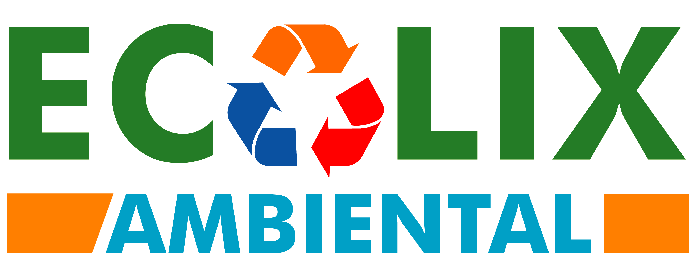

Transformando o presente , preservando o futuro
1.200.000 TON / MÊS
Reciclamos mais de 1.200.000 toneladas de materiais por mês, contribuindo para um planeta mais sustentável." .
Nossa Frota
Frota dedicada que garante rapidez e qualidade no atendimento aos nossos clientes.
08 Anos no mercado
Estamos há mais de 08 anos no mercado com muita experiência no ramo de reciclagem.
SOBRE NÓS
A Ecolix Ambiental surgiu há mais de 08 anos, quando Cícero decidiu iniciar um pequeno negócio com apenas um caminhão e um grande propósito: cuidar do meio ambiente enquanto gerava valor com a reciclagem.
De lá pra cá, a empresa cresceu com base em parcerias de confiança, trabalho sério e compromisso com a sustentabilidade. Hoje, contamos com frota própria, equipe qualificada e uma operação estruturada em Guarulhos/SP, atendendo desde grandes empresas até pequenos comércios da região.
Atuamos com a compra de materiais recicláveis e a venda de fardos prensados, oferecendo agilidade, preços competitivos e total regularização ambiental. Temos orgulho de atender mensalmente mais de 70 clientes ativos, sempre com responsabilidade e transparência.
Nosso lema é claro: “Transformando o presente, preservando o futuro.” E se depender da Ecolix, o futuro será cada vez mais limpo e consciente.
Quer saber como podemos ajudar seu negócio a reciclar melhor e economizar?
Fale com a gentePRODUTOS E FROTA
Coleta Inteligente com a Ecolix
Frota moderna, agilidade garantida e transporte seguro de resíduos recicláveis. Atuamos com responsabilidade ambiental e foco em eficiência.
Materiais:
- 📦 Papelão
- 📃 Papel Branco
- ♻️ Plásticos
Soluções rápidas para empresas que valorizam o meio ambiente.